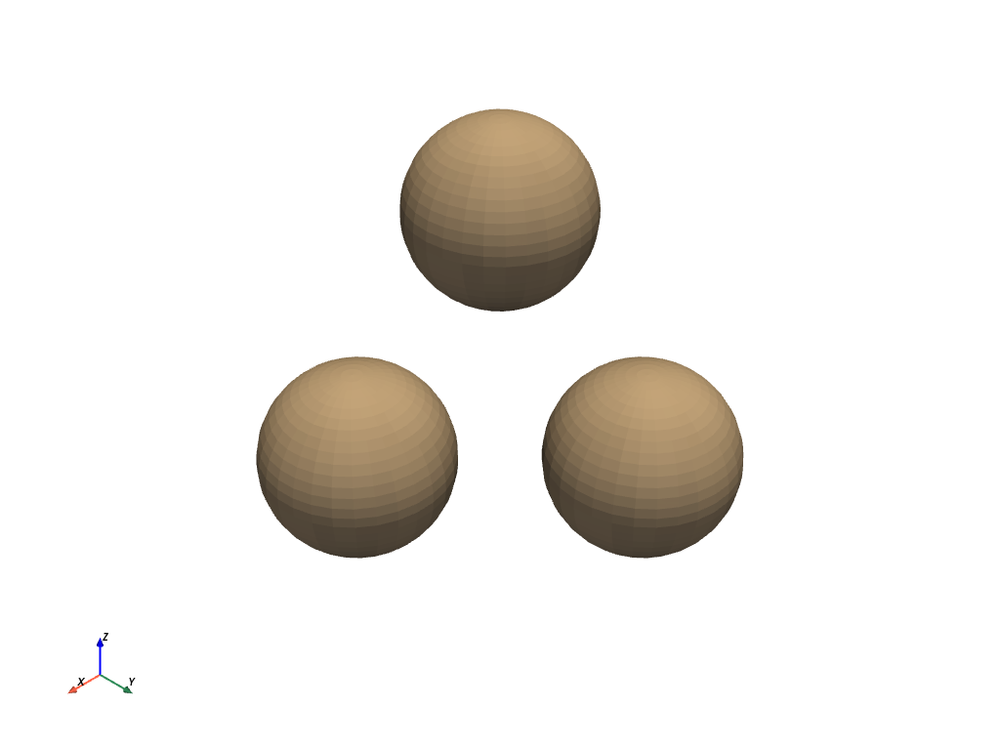

merge¶
- UnstructuredGridFilters.merge(grid=None, merge_points=True, inplace=False, main_has_priority=True, progress_bar=False)¶
1つまたは複数の他のグリッドをこのグリッドに結合します．
既定では，グリッドは所定の位置で更新されます．
グリッドが入力されていないときに，隣接するセルの点を結合するために使用できます．
注釈
2つのメッシュ間の
+演算子は、このフィルタをデフォルトのパラメータで使用します。- パラメータ
- gridvtk.UnstructuredGrid または python:vtk.UnstructuredGrids の python:list
このグリッドにマージするグリッド．
- merge_pointsbool,
optional まったく同じ位置にあるポイントは，2つのメッシュ間でマージされます．警告:縮退した点データが残る可能性があります．
- inplacebool,
optional 入力タイプが
pyvista.UnstructuredGridの場合にTrueの時にグリッドを更新します- main_has_prioritybool,
optional このパラメータがtrueでmerge_pointsがtrueの場合，マージグリッドの配列は元のメインメッシュによって上書きされます．
- progress_barbool,
optional 進行状況を示す進行状況バーを表示します．
- 戻り値
pyvista.UnstructuredGridマージされたグリッド．
備考
複数のグリッドを結合する場合は，各配列のタイプと名前が一致している必要があります．一致していない場合，配列は無視され，最終的に結合されたメッシュには含まれません．
例
3つの独立した球体を1つのメッシュに統合します。
>>> import pyvista >>> sphere_a = pyvista.Sphere(center=(1, 0, 0)) >>> sphere_b = pyvista.Sphere(center=(0, 1, 0)) >>> sphere_c = pyvista.Sphere(center=(0, 0, 1)) >>> merged = sphere_a.merge([sphere_b, sphere_c]) >>> merged.plot()
